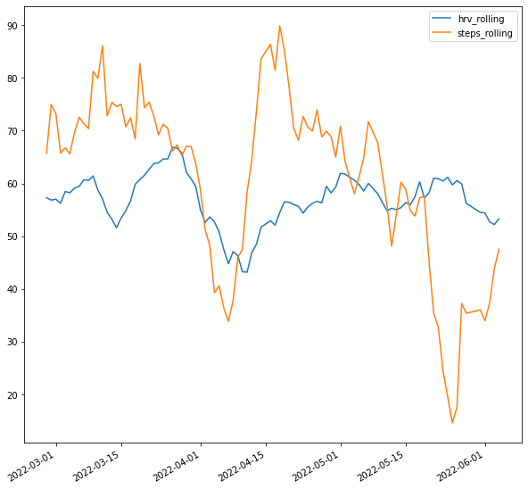
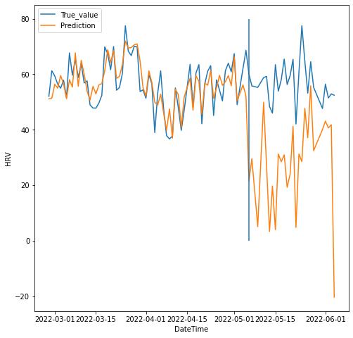

import pandas as pd
import numpy as np
import json
import glob
import tensorflow as tf
from sklearn.linear_model import LinearRegression
from sklearn.linear_model import SGDRegressor
from sklearn.preprocessing import PolynomialFeatures
from sklearn.model_selection import train_test_split
from sklearn import metrics
import matplotlib.pyplot as plt
from autogluon.tabular import TabularDataset, TabularPredictor%run fitbit_generate_daily_hrv.ipynb
hrv_raw = pd.read_csv('./Fitbit/ShiYangLee/Sleep/daily_hrv_full.csv')
hrv_raw| timestamp | rmssd | nremhr | entropy | |
|---|---|---|---|---|
| 0 | 2022-02-27T00:00:00 | 52.053 | 53.789 | 2.833 |
| 1 | 2022-02-28T00:00:00 | 61.281 | 49.983 | 2.935 |
| 2 | 2022-03-01T00:00:00 | 59.392 | 50.798 | 2.943 |
| 3 | 2022-03-02T00:00:00 | 56.437 | 54.837 | 2.829 |
| 4 | 2022-03-03T00:00:00 | 54.982 | 52.368 | 2.927 |
| ... | ... | ... | ... | ... |
| 87 | 2022-05-31T00:00:00 | 47.665 | 56.233 | 2.883 |
| 88 | 2022-06-01T00:00:00 | 56.450 | 52.769 | 2.938 |
| 89 | 2022-06-02T00:00:00 | 51.455 | 56.017 | 2.938 |
| 90 | 2022-06-03T00:00:00 | 52.935 | 54.560 | 2.840 |
| 91 | 2022-06-04T00:00:00 | 52.431 | 55.384 | 2.882 |
92 rows × 4 columns
hrv_raw.set_index('timestamp', inplace = True)hrv_raw.index = pd.to_datetime(hrv_raw.index, format = '%Y-%m-%d')
# hrv_raw.index = hrv_raw.index.to_series().dt.strftime('%Y-%m-%d')hrv_raw['rmssd'].plot()<AxesSubplot:xlabel='timestamp'>hrv_raw['hrv_rolling'] = hrv_raw['rmssd'].rolling(7, 3, center = True).mean()hrv_raw[['rmssd', 'hrv_rolling']].plot()<AxesSubplot:xlabel='timestamp'>%run fitbit_generate_steps.ipynb
steps_raw = pd.read_csv('./Fitbit/ShiYangLee/Physical Activity/steps_full.csv')
steps_raw.head()| dateTime | value | |
|---|---|---|
| 0 | 2022-02-26 22:15:00 | 0 |
| 1 | 2022-02-26 22:16:00 | 5 |
| 2 | 2022-02-26 22:17:00 | 0 |
| 3 | 2022-02-26 22:18:00 | 0 |
| 4 | 2022-02-26 22:19:00 | 0 |
steps_raw.set_index('dateTime', inplace = True)
steps_raw.index = pd.to_datetime(steps_raw.index)
steps_per_day = steps_raw.groupby(steps_raw.index.to_series().dt.date).sum()
steps_per_day.index = pd.to_datetime(steps_per_day.index)
steps_per_day.columns = ['steps']steps_per_day.head()| steps | |
|---|---|
| dateTime | |
| 2022-02-26 | 60 |
| 2022-02-27 | 2542 |
| 2022-02-28 | 6426 |
| 2022-03-01 | 9602 |
| 2022-03-02 | 7721 |
hrv = hrv_raw.merge(steps_per_day, left_index=True, right_index=True)hrv['steps_normalized'] = hrv['steps']/100
hrv['steps_rolling'] = hrv['steps_normalized'].rolling(7, 3, center = True).mean()hrv[['hrv_rolling', 'steps_rolling']].plot()<AxesSubplot:>
sleep_dir = glob.glob('./Fitbit/ShiYangLee/Sleep/sleep-*.json')
dfs = []
for file in sleep_dir:
data = pd.read_json(file)
dfs.append(data)
sleep = pd.concat(dfs, ignore_index=True)
sleep.head()| logId | dateOfSleep | startTime | endTime | duration | minutesToFallAsleep | minutesAsleep | minutesAwake | minutesAfterWakeup | timeInBed | efficiency | type | infoCode | logType | levels | mainSleep | |
|---|---|---|---|---|---|---|---|---|---|---|---|---|---|---|---|---|
| 0 | 36651127171 | 2022-04-26 | 2022-04-25T23:59:00.000 | 2022-04-26T07:53:30.000 | 28440000 | 0 | 419 | 55 | 0 | 474 | 96 | stages | 0 | auto_detected | {'summary': {'deep': {'count': 4, 'minutes': 8... | True |
| 1 | 36638185772 | 2022-04-25 | 2022-04-25T01:04:00.000 | 2022-04-25T07:43:30.000 | 23940000 | 0 | 339 | 60 | 6 | 399 | 95 | stages | 0 | auto_detected | {'summary': {'deep': {'count': 6, 'minutes': 7... | True |
| 2 | 36625185402 | 2022-04-24 | 2022-04-23T22:20:30.000 | 2022-04-24T09:35:30.000 | 40500000 | 0 | 568 | 107 | 0 | 675 | 96 | stages | 0 | auto_detected | {'summary': {'deep': {'count': 5, 'minutes': 9... | True |
| 3 | 36617451798 | 2022-04-23 | 2022-04-23T13:25:00.000 | 2022-04-23T14:56:00.000 | 5460000 | 0 | 80 | 11 | 0 | 91 | 88 | classic | 2 | auto_detected | {'summary': {'restless': {'count': 4, 'minutes... | False |
| 4 | 36613912467 | 2022-04-23 | 2022-04-22T23:23:00.000 | 2022-04-23T11:20:30.000 | 43020000 | 0 | 623 | 94 | 0 | 717 | 93 | stages | 0 | auto_detected | {'summary': {'deep': {'count': 7, 'minutes': 1... | True |
json_struct = json.loads(sleep.to_json(orient='records'))
sleep = pd.json_normalize(json_struct)sleep.drop(['levels.data', 'levels.shortData'], axis=1, inplace=True)
sleep| logId | dateOfSleep | startTime | endTime | duration | minutesToFallAsleep | minutesAsleep | minutesAwake | minutesAfterWakeup | timeInBed | ... | levels.summary.light.thirtyDayAvgMinutes | levels.summary.rem.count | levels.summary.rem.minutes | levels.summary.rem.thirtyDayAvgMinutes | levels.summary.restless.count | levels.summary.restless.minutes | levels.summary.awake.count | levels.summary.awake.minutes | levels.summary.asleep.count | levels.summary.asleep.minutes | |
|---|---|---|---|---|---|---|---|---|---|---|---|---|---|---|---|---|---|---|---|---|---|
| 0 | 36651127171 | 2022-04-26 | 2022-04-25T23:59:00.000 | 2022-04-26T07:53:30.000 | 28440000 | 0 | 419 | 55 | 0 | 474 | ... | 271.0 | 6.0 | 89.0 | 101.0 | NaN | NaN | NaN | NaN | NaN | NaN |
| 1 | 36638185772 | 2022-04-25 | 2022-04-25T01:04:00.000 | 2022-04-25T07:43:30.000 | 23940000 | 0 | 339 | 60 | 6 | 399 | ... | 273.0 | 5.0 | 61.0 | 103.0 | NaN | NaN | NaN | NaN | NaN | NaN |
| 2 | 36625185402 | 2022-04-24 | 2022-04-23T22:20:30.000 | 2022-04-24T09:35:30.000 | 40500000 | 0 | 568 | 107 | 0 | 675 | ... | 271.0 | 14.0 | 143.0 | 101.0 | NaN | NaN | NaN | NaN | NaN | NaN |
| 3 | 36617451798 | 2022-04-23 | 2022-04-23T13:25:00.000 | 2022-04-23T14:56:00.000 | 5460000 | 0 | 80 | 11 | 0 | 91 | ... | NaN | NaN | NaN | NaN | 4.0 | 10.0 | 1.0 | 1.0 | 0.0 | 80.0 |
| 4 | 36613912467 | 2022-04-23 | 2022-04-22T23:23:00.000 | 2022-04-23T11:20:30.000 | 43020000 | 0 | 623 | 94 | 0 | 717 | ... | 269.0 | 12.0 | 153.0 | 99.0 | NaN | NaN | NaN | NaN | NaN | NaN |
| ... | ... | ... | ... | ... | ... | ... | ... | ... | ... | ... | ... | ... | ... | ... | ... | ... | ... | ... | ... | ... | ... |
| 119 | 37092507425 | 2022-05-31 | 2022-05-31T00:40:00.000 | 2022-05-31T08:39:00.000 | 28740000 | 0 | 425 | 54 | 1 | 479 | ... | 251.0 | 4.0 | 133.0 | 143.0 | NaN | NaN | NaN | NaN | NaN | NaN |
| 120 | 37087272653 | 2022-05-30 | 2022-05-30T18:45:00.000 | 2022-05-30T19:54:30.000 | 4140000 | 0 | 64 | 5 | 0 | 69 | ... | NaN | NaN | NaN | NaN | 2.0 | 5.0 | 0.0 | 0.0 | 0.0 | 64.0 |
| 121 | 37054307750 | 2022-05-28 | 2022-05-27T23:15:00.000 | 2022-05-28T09:38:00.000 | 37380000 | 0 | 548 | 75 | 6 | 623 | ... | 235.0 | 12.0 | 154.0 | 138.0 | NaN | NaN | NaN | NaN | NaN | NaN |
| 122 | 37044773607 | 2022-05-27 | 2022-05-27T00:46:00.000 | 2022-05-27T09:15:30.000 | 30540000 | 0 | 470 | 39 | 0 | 509 | ... | 208.0 | 9.0 | 113.0 | 162.0 | NaN | NaN | NaN | NaN | NaN | NaN |
| 123 | 37030691168 | 2022-05-26 | 2022-05-26T00:18:30.000 | 2022-05-26T09:11:00.000 | 31920000 | 0 | 479 | 53 | 5 | 532 | ... | 0.0 | 11.0 | 162.0 | 0.0 | NaN | NaN | NaN | NaN | NaN | NaN |
124 rows × 33 columns
sleep.to_csv('sleep_tmp.csv')sleep = sleep[~sleep.duplicated(subset='logId', keep='last')]sleep_duration_df = sleep.set_index('dateOfSleep')
sleep_duration_df.index = pd.to_datetime(sleep_duration_df.index)
print(sleep_duration_df.index.dtype)
sleep_duration_df = sleep_duration_df['minutesAsleep'].groupby(sleep_duration_df.index.to_series().dt.date).sum()datetime64[ns]sleep_duration_df.sort_index(inplace = True)hrv = hrv.merge(sleep_duration_df, left_index=True, right_index=True)hrv['minutesAsleep_normalized'] = hrv['minutesAsleep']/10
hrv['minutesAsleep_rolling'] = hrv['minutesAsleep_normalized'].rolling(7, 3, center=True)\
.mean()
hrv.head()| rmssd | nremhr | entropy | hrv_rolling | steps | steps_normalized | steps_rolling | minutesAsleep | minutesAsleep_normalized | minutesAsleep_rolling | |
|---|---|---|---|---|---|---|---|---|---|---|
| 2022-02-27 | 52.053 | 53.789 | 2.833 | 57.290750 | 2542 | 25.42 | 65.727500 | 395 | 39.5 | 35.950000 |
| 2022-02-28 | 61.281 | 49.983 | 2.935 | 56.829000 | 6426 | 64.26 | 74.984000 | 328 | 32.8 | 34.500000 |
| 2022-03-01 | 59.392 | 50.798 | 2.943 | 57.001500 | 9602 | 96.02 | 73.248333 | 321 | 32.1 | 35.333333 |
| 2022-03-02 | 56.437 | 54.837 | 2.829 | 56.220143 | 7721 | 77.21 | 65.765714 | 394 | 39.4 | 38.057143 |
| 2022-03-03 | 54.982 | 52.368 | 2.927 | 58.457857 | 11201 | 112.01 | 66.738571 | 287 | 28.7 | 39.114286 |
hrv[['hrv_rolling', 'steps_rolling', 'minutesAsleep_rolling']].plot()<AxesSubplot:>def get_hrz_df():
hrz_dir = glob.glob('./Fitbit/ShiYangLee/Physical Activity/time_in_heart_rate_zones-*.json')
dfs = []
for file in hrz_dir:
tmp = pd.read_json(file, orient='values')
dfs.append(tmp)
hrz_df = pd.concat(dfs, ignore_index=True)
hrz_df = pd.concat([hrz_df, pd.json_normalize(hrz_df['value'])], axis=1)
hrz_df.drop('value', axis=1, inplace=True)
hrz_df.set_index('dateTime', inplace=True)
hrz_df.sort_index(inplace=True)
hrz_df.rename(columns = {'valuesInZones.BELOW_DEFAULT_ZONE_1':'Resting_minutes', \
'valuesInZones.IN_DEFAULT_ZONE_1':'Fat_burn_minutes', \
'valuesInZones.IN_DEFAULT_ZONE_2':'Cardio_minutes', \
'valuesInZones.IN_DEFAULT_ZONE_3':'Peak_minutes'}, \
inplace=True)
return hrz_dfhrz_df = get_hrz_df()
hrz_df.head()| Fat_burn_minutes | Cardio_minutes | Peak_minutes | Resting_minutes | |
|---|---|---|---|---|
| dateTime | ||||
| 2022-02-26 | 0.0 | 0.0 | 0.0 | 109.0 |
| 2022-02-27 | 49.0 | 2.0 | 0.0 | 1375.0 |
| 2022-02-28 | 74.0 | 1.0 | 0.0 | 1327.0 |
| 2022-03-01 | 301.0 | 2.0 | 0.0 | 1133.0 |
| 2022-03-02 | 63.0 | 0.0 | 0.0 | 1318.0 |
hrv = hrv.merge(hrz_df, left_index=True, right_index=True)hrv| rmssd | nremhr | entropy | hrv_rolling | steps | steps_normalized | steps_rolling | minutesAsleep | minutesAsleep_normalized | minutesAsleep_rolling | Fat_burn_minutes | Cardio_minutes | Peak_minutes | Resting_minutes | |
|---|---|---|---|---|---|---|---|---|---|---|---|---|---|---|
| 2022-02-27 | 52.053 | 53.789 | 2.833 | 57.290750 | 2542 | 25.42 | 65.727500 | 395 | 39.5 | 35.950000 | 49.0 | 2.0 | 0.0 | 1375.0 |
| 2022-02-28 | 61.281 | 49.983 | 2.935 | 56.829000 | 6426 | 64.26 | 74.984000 | 328 | 32.8 | 34.500000 | 74.0 | 1.0 | 0.0 | 1327.0 |
| 2022-03-01 | 59.392 | 50.798 | 2.943 | 57.001500 | 9602 | 96.02 | 73.248333 | 321 | 32.1 | 35.333333 | 301.0 | 2.0 | 0.0 | 1133.0 |
| 2022-03-02 | 56.437 | 54.837 | 2.829 | 56.220143 | 7721 | 77.21 | 65.765714 | 394 | 39.4 | 38.057143 | 63.0 | 0.0 | 0.0 | 1318.0 |
| 2022-03-03 | 54.982 | 52.368 | 2.927 | 58.457857 | 11201 | 112.01 | 66.738571 | 287 | 28.7 | 39.114286 | 134.0 | 0.0 | 0.0 | 1261.0 |
| ... | ... | ... | ... | ... | ... | ... | ... | ... | ... | ... | ... | ... | ... | ... |
| 2022-05-31 | 47.665 | 56.233 | 2.883 | 54.501571 | 2925 | 29.25 | 36.010000 | 425 | 42.5 | 49.257143 | 48.0 | 0.0 | 0.0 | 1199.0 |
| 2022-06-01 | 56.450 | 52.769 | 2.938 | 54.392000 | 15028 | 150.28 | 33.932857 | 334 | 33.4 | 49.942857 | 519.0 | 5.0 | 0.0 | 908.0 |
| 2022-06-02 | 51.455 | 56.017 | 2.938 | 52.701833 | 563 | 5.63 | 37.328333 | 573 | 57.3 | 50.433333 | 3.0 | 0.0 | 0.0 | 862.0 |
| 2022-06-03 | 52.935 | 54.560 | 2.840 | 52.187200 | 3215 | 32.15 | 43.846000 | 619 | 61.9 | 49.560000 | 187.0 | 13.0 | 0.0 | 1044.0 |
| 2022-06-04 | 52.431 | 55.384 | 2.882 | 53.317750 | 192 | 1.92 | 47.495000 | 527 | 52.7 | 51.325000 | 0.0 | 0.0 | 0.0 | 647.0 |
92 rows × 14 columns
lag_list = ['steps', 'minutesAsleep', 'Cardio_minutes', 'Resting_minutes', \
'Peak_minutes', 'Fat_burn_minutes', 'rmssd']
def get_lag(df, lag_list, num_lag = 10):
for col in lag_list:
df = df.join([df[col].shift(x).rename(f"{col}_lag{x}") \
for x in range(1, num_lag+1)])
return dflag_df = get_lag(hrv, lag_list)
lag_df.head()
lag_df.to_csv('hrv_features_data.csv')def get_partial_date(df, num):
duration = df.index[-1] - df.index[0]
return pd.to_datetime(df.index[0] + num * pd.to_timedelta(duration))split_date = get_partial_date(lag_df, 0.7)
fearue_df = lag_df.drop(columns=['rmssd', 'nremhr', 'entropy', 'hrv_rolling', 'steps_normalized', \
'steps_rolling', 'minutesAsleep_normalized', 'minutesAsleep_rolling'])
fearue_df = fearue_df.interpolate(limit_direction='backward')
target_df = lag_df['rmssd']
train_feature_df = fearue_df[fearue_df.index < split_date]
train_target_df = target_df[target_df.index < split_date]
test_feature_df = fearue_df[fearue_df.index >= split_date]
test_target_df = target_df[target_df.index >= split_date]model = LinearRegression(positive=True)
model.fit(X= train_feature_df, y = train_target_df)
lag_df_pred = model.predict(test_feature_df)
train_pred = model.predict(train_feature_df)lag_df_predarray([ 21.4760811 , 29.58051799, 5.07399493, 49.88034677,
26.88276033, 3.32142635, 19.71257407, 4.001742 ,
31.23574041, 28.49397365, 30.95724303, 19.25458662,
23.97663512, 41.23938159, 4.81121581, 31.24529391,
28.51225889, 47.72197601, 37.13287846, 55.83223294,
32.45460002, 40.07110786, 43.10763371, 40.67618983,
41.78430693, -20.36163224])if not isinstance(train_target_df, pd.DataFrame):
train_target_df = train_target_df.to_frame()
if not isinstance(test_target_df, pd.DataFrame):
test_target_df = test_target_df.to_frame()
train_target_df['pred'] = train_pred
test_target_df['pred'] = lag_df_pred
final_df = pd.concat([train_target_df, test_target_df])model.score(test_feature_df, test_target_df['rmssd'])-20.537318991809833plt.rcParams["figure.figsize"] = (8, 8)
plt.plot(final_df, label = ['True_value','Prediction'])
plt.xlabel('DateTime')
plt.ylabel('HRV')
plt.vlines(split_date, ymin=0, ymax=80)
plt.legend()
plt.savefig('HRV_prediction.jpeg')
plt.show()
pd.set_option('display.max_rows', 10)
coef = pd.DataFrame(zip(train_feature_df.columns, model.coef_), columns = ['variables', 'coefficients'])
coef = coef.sort_values('coefficients', ascending=False)
coef.head(10)| variables | coefficients | |
|---|---|---|
| 53 | Peak_minutes_lag8 | 3.845761 |
| 49 | Peak_minutes_lag4 | 2.655873 |
| 3 | Cardio_minutes | 1.277758 |
| 54 | Peak_minutes_lag9 | 0.937208 |
| 27 | Cardio_minutes_lag2 | 0.542156 |
| 32 | Cardio_minutes_lag7 | 0.440441 |
| 34 | Cardio_minutes_lag9 | 0.398409 |
| 28 | Cardio_minutes_lag3 | 0.245885 |
| 35 | Cardio_minutes_lag10 | 0.233890 |
| 4 | Peak_minutes | 0.145260 |
bar = lag_df[coef['variables'][:10]]bar| Peak_minutes_lag8 | Peak_minutes_lag4 | Cardio_minutes | Peak_minutes_lag9 | Cardio_minutes_lag2 | Cardio_minutes_lag7 | Cardio_minutes_lag9 | Cardio_minutes_lag3 | Cardio_minutes_lag10 | Peak_minutes | |
|---|---|---|---|---|---|---|---|---|---|---|
| 2022-02-27 | NaN | NaN | 2.0 | NaN | NaN | NaN | NaN | NaN | NaN | 0.0 |
| 2022-02-28 | NaN | NaN | 1.0 | NaN | NaN | NaN | NaN | NaN | NaN | 0.0 |
| 2022-03-01 | NaN | NaN | 2.0 | NaN | 2.0 | NaN | NaN | NaN | NaN | 0.0 |
| 2022-03-02 | NaN | NaN | 0.0 | NaN | 1.0 | NaN | NaN | 2.0 | NaN | 0.0 |
| 2022-03-03 | NaN | 0.0 | 0.0 | NaN | 2.0 | NaN | NaN | 1.0 | NaN | 0.0 |
| ... | ... | ... | ... | ... | ... | ... | ... | ... | ... | ... |
| 2022-05-31 | 0.0 | 2.0 | 0.0 | 0.0 | 0.0 | 0.0 | 0.0 | 0.0 | 2.0 | 0.0 |
| 2022-06-01 | 0.0 | 0.0 | 5.0 | 0.0 | 0.0 | 4.0 | 0.0 | 0.0 | 0.0 | 0.0 |
| 2022-06-02 | 8.0 | 0.0 | 0.0 | 0.0 | 0.0 | 0.0 | 0.0 | 0.0 | 0.0 | 0.0 |
| 2022-06-03 | 0.0 | 0.0 | 13.0 | 8.0 | 5.0 | 3.0 | 4.0 | 0.0 | 0.0 | 0.0 |
| 2022-06-04 | 2.0 | 0.0 | 0.0 | 0.0 | 0.0 | 0.0 | 0.0 | 5.0 | 4.0 | 0.0 |
92 rows × 10 columns
plt.figure(1)
plt.plot(final_df, label = ['True_value','Prediction'])
plt.legend()
plt.show()
plt.figure(2)
bar.plot(kind='bar', stacked=True)
plt.legend()
plt.show()<Figure size 576x576 with 0 Axes>normalized_df=(lag_df-lag_df.min())/(lag_df.max()-lag_df.min())split_date = get_partial_date(lag_df, 0.7)
norm_fearue_df = lag_df.drop(columns=['rmssd', 'nremhr', 'entropy', 'hrv_rolling', 'steps_normalized', \
'steps_rolling', 'minutesAsleep_normalized', 'minutesAsleep_rolling'])
norm_fearue_df = norm_fearue_df.interpolate(limit_direction='backward')
norm_target_df = normalized_df['rmssd']
norm_train_feature_df = norm_fearue_df[fearue_df.index < split_date]
norm_train_target_df = norm_target_df[target_df.index < split_date]
norm_test_feature_df = norm_fearue_df[fearue_df.index >= split_date]
norm_test_target_df = norm_target_df[target_df.index >= split_date]norm_model = LinearRegression(positive=True)
norm_model.fit(X= norm_train_feature_df, y = norm_train_target_df)
norm_lag_df_pred = norm_model.predict(norm_test_feature_df)
norm_train_pred = norm_model.predict(norm_train_feature_df)if not isinstance(norm_train_target_df, pd.DataFrame):
norm_train_target_df = norm_train_target_df.to_frame()
if not isinstance(norm_test_target_df, pd.DataFrame):
norm_test_target_df = norm_test_target_df.to_frame()
norm_train_target_df['pred'] = norm_train_pred
norm_test_target_df['pred'] = norm_lag_df_pred
norm_final_df = pd.concat([norm_train_target_df, norm_test_target_df])plt.rcParams["figure.figsize"] = (10, 10)
plt.plot(norm_final_df, label = ['True_value','Prediction'])
plt.xlabel('DateTime')
plt.ylabel('HRV')
# plt.vlines(split_date, ymin=0, ymax=80)
plt.legend()
plt.savefig('HRV_prediction.jpeg')
plt.show()norm_coef = pd.DataFrame(zip(norm_train_feature_df.columns, norm_model.coef_), columns = ['variables', 'coefficients'])
norm_coef = norm_coef.sort_values('coefficients', ascending=False)
norm_coef.head(10)| variables | coefficients | |
|---|---|---|
| 53 | Peak_minutes_lag8 | 0.094125 |
| 49 | Peak_minutes_lag4 | 0.065003 |
| 3 | Cardio_minutes | 0.031273 |
| 54 | Peak_minutes_lag9 | 0.022938 |
| 27 | Cardio_minutes_lag2 | 0.013269 |
| 32 | Cardio_minutes_lag7 | 0.010780 |
| 34 | Cardio_minutes_lag9 | 0.009751 |
| 28 | Cardio_minutes_lag3 | 0.006018 |
| 35 | Cardio_minutes_lag10 | 0.005724 |
| 4 | Peak_minutes | 0.003555 |
for i in range(1, 11):
print(f"Lag {i} correlation is: ", lag_df['rmssd'].autocorr(lag=i))Lag 1 correlation is: 0.34025622457976207
Lag 2 correlation is: 0.13093410406826045
Lag 3 correlation is: 0.2899652330054049
Lag 4 correlation is: 0.17777560211414647
Lag 5 correlation is: 0.01891563472475311
Lag 6 correlation is: 0.12297582512597087
Lag 7 correlation is: -0.027419420021947822
Lag 8 correlation is: 0.01314137893812063
Lag 9 correlation is: 0.09586721928741726
Lag 10 correlation is: -0.10188226779722838lag_df| rmssd | nremhr | entropy | hrv_rolling | steps | steps_normalized | steps_rolling | minutesAsleep | minutesAsleep_normalized | minutesAsleep_rolling | ... | rmssd_lag1 | rmssd_lag2 | rmssd_lag3 | rmssd_lag4 | rmssd_lag5 | rmssd_lag6 | rmssd_lag7 | rmssd_lag8 | rmssd_lag9 | rmssd_lag10 | |
|---|---|---|---|---|---|---|---|---|---|---|---|---|---|---|---|---|---|---|---|---|---|
| 2022-02-27 | 52.053 | 53.789 | 2.833 | 57.290750 | 2542 | 25.42 | 65.727500 | 395 | 39.5 | 35.950000 | ... | NaN | NaN | NaN | NaN | NaN | NaN | NaN | NaN | NaN | NaN |
| 2022-02-28 | 61.281 | 49.983 | 2.935 | 56.829000 | 6426 | 64.26 | 74.984000 | 328 | 32.8 | 34.500000 | ... | 52.053 | NaN | NaN | NaN | NaN | NaN | NaN | NaN | NaN | NaN |
| 2022-03-01 | 59.392 | 50.798 | 2.943 | 57.001500 | 9602 | 96.02 | 73.248333 | 321 | 32.1 | 35.333333 | ... | 61.281 | 52.053 | NaN | NaN | NaN | NaN | NaN | NaN | NaN | NaN |
| 2022-03-02 | 56.437 | 54.837 | 2.829 | 56.220143 | 7721 | 77.21 | 65.765714 | 394 | 39.4 | 38.057143 | ... | 59.392 | 61.281 | 52.053 | NaN | NaN | NaN | NaN | NaN | NaN | NaN |
| 2022-03-03 | 54.982 | 52.368 | 2.927 | 58.457857 | 11201 | 112.01 | 66.738571 | 287 | 28.7 | 39.114286 | ... | 56.437 | 59.392 | 61.281 | 52.053 | NaN | NaN | NaN | NaN | NaN | NaN |
| ... | ... | ... | ... | ... | ... | ... | ... | ... | ... | ... | ... | ... | ... | ... | ... | ... | ... | ... | ... | ... | ... |
| 2022-05-31 | 47.665 | 56.233 | 2.883 | 54.501571 | 2925 | 29.25 | 36.010000 | 425 | 42.5 | 49.257143 | ... | 55.275 | 64.533 | 53.198 | 64.780 | 77.557 | 60.643 | 42.069 | 65.393 | 59.480 | 56.305 |
| 2022-06-01 | 56.450 | 52.769 | 2.938 | 54.392000 | 15028 | 150.28 | 33.932857 | 334 | 33.4 | 49.942857 | ... | 47.665 | 55.275 | 64.533 | 53.198 | 64.780 | 77.557 | 60.643 | 42.069 | 65.393 | 59.480 |
| 2022-06-02 | 51.455 | 56.017 | 2.938 | 52.701833 | 563 | 5.63 | 37.328333 | 573 | 57.3 | 50.433333 | ... | 56.450 | 47.665 | 55.275 | 64.533 | 53.198 | 64.780 | 77.557 | 60.643 | 42.069 | 65.393 |
| 2022-06-03 | 52.935 | 54.560 | 2.840 | 52.187200 | 3215 | 32.15 | 43.846000 | 619 | 61.9 | 49.560000 | ... | 51.455 | 56.450 | 47.665 | 55.275 | 64.533 | 53.198 | 64.780 | 77.557 | 60.643 | 42.069 |
| 2022-06-04 | 52.431 | 55.384 | 2.882 | 53.317750 | 192 | 1.92 | 47.495000 | 527 | 52.7 | 51.325000 | ... | 52.935 | 51.455 | 56.450 | 47.665 | 55.275 | 64.533 | 53.198 | 64.780 | 77.557 | 60.643 |
92 rows × 84 columns
poly = PolynomialFeatures(2)fearue_df| steps | minutesAsleep | Fat_burn_minutes | Cardio_minutes | Peak_minutes | Resting_minutes | steps_lag1 | steps_lag2 | steps_lag3 | steps_lag4 | ... | rmssd_lag1 | rmssd_lag2 | rmssd_lag3 | rmssd_lag4 | rmssd_lag5 | rmssd_lag6 | rmssd_lag7 | rmssd_lag8 | rmssd_lag9 | rmssd_lag10 | |
|---|---|---|---|---|---|---|---|---|---|---|---|---|---|---|---|---|---|---|---|---|---|
| 2022-02-27 | 2542 | 395 | 49.0 | 2.0 | 0.0 | 1375.0 | 2542.0 | 2542.0 | 2542.0 | 2542.0 | ... | 52.053 | 52.053 | 52.053 | 52.053 | 52.053 | 52.053 | 52.053 | 52.053 | 52.053 | 52.053 |
| 2022-02-28 | 6426 | 328 | 74.0 | 1.0 | 0.0 | 1327.0 | 2542.0 | 2542.0 | 2542.0 | 2542.0 | ... | 52.053 | 52.053 | 52.053 | 52.053 | 52.053 | 52.053 | 52.053 | 52.053 | 52.053 | 52.053 |
| 2022-03-01 | 9602 | 321 | 301.0 | 2.0 | 0.0 | 1133.0 | 6426.0 | 2542.0 | 2542.0 | 2542.0 | ... | 61.281 | 52.053 | 52.053 | 52.053 | 52.053 | 52.053 | 52.053 | 52.053 | 52.053 | 52.053 |
| 2022-03-02 | 7721 | 394 | 63.0 | 0.0 | 0.0 | 1318.0 | 9602.0 | 6426.0 | 2542.0 | 2542.0 | ... | 59.392 | 61.281 | 52.053 | 52.053 | 52.053 | 52.053 | 52.053 | 52.053 | 52.053 | 52.053 |
| 2022-03-03 | 11201 | 287 | 134.0 | 0.0 | 0.0 | 1261.0 | 7721.0 | 9602.0 | 6426.0 | 2542.0 | ... | 56.437 | 59.392 | 61.281 | 52.053 | 52.053 | 52.053 | 52.053 | 52.053 | 52.053 | 52.053 |
| ... | ... | ... | ... | ... | ... | ... | ... | ... | ... | ... | ... | ... | ... | ... | ... | ... | ... | ... | ... | ... | ... |
| 2022-05-31 | 2925 | 425 | 48.0 | 0.0 | 0.0 | 1199.0 | 474.0 | 1356.0 | 1646.0 | 2765.0 | ... | 55.275 | 64.533 | 53.198 | 64.780 | 77.557 | 60.643 | 42.069 | 65.393 | 59.480 | 56.305 |
| 2022-06-01 | 15028 | 334 | 519.0 | 5.0 | 0.0 | 908.0 | 2925.0 | 474.0 | 1356.0 | 1646.0 | ... | 47.665 | 55.275 | 64.533 | 53.198 | 64.780 | 77.557 | 60.643 | 42.069 | 65.393 | 59.480 |
| 2022-06-02 | 563 | 573 | 3.0 | 0.0 | 0.0 | 862.0 | 15028.0 | 2925.0 | 474.0 | 1356.0 | ... | 56.450 | 47.665 | 55.275 | 64.533 | 53.198 | 64.780 | 77.557 | 60.643 | 42.069 | 65.393 |
| 2022-06-03 | 3215 | 619 | 187.0 | 13.0 | 0.0 | 1044.0 | 563.0 | 15028.0 | 2925.0 | 474.0 | ... | 51.455 | 56.450 | 47.665 | 55.275 | 64.533 | 53.198 | 64.780 | 77.557 | 60.643 | 42.069 |
| 2022-06-04 | 192 | 527 | 0.0 | 0.0 | 0.0 | 647.0 | 3215.0 | 563.0 | 15028.0 | 2925.0 | ... | 52.935 | 51.455 | 56.450 | 47.665 | 55.275 | 64.533 | 53.198 | 64.780 | 77.557 | 60.643 |
92 rows × 76 columns
poly_df = poly.fit_transform(train_feature_df)len(poly_df[0])3003len(poly_df)66poly_model = LinearRegression()
poly_model.fit(poly_df, train_target_df['rmssd'])LinearRegression()poly_full_df = poly.fit_transform(fearue_df)poly_pred = poly_model.predict(poly_full_df)final_df['poly_pred'] = poly_predplt.plot(final_df, label=final_df.columns)
plt.legend()<matplotlib.legend.Legend at 0x7fec1c8643a0>lag_df = lag_df.interpolate(limit_direction='backward')
split_train_df, split_test_df = train_test_split(lag_df, train_size =0.7, \
shuffle=True)
split_train_target = split_train_df['rmssd']
split_test_target = split_test_df['rmssd']
split_train_feature = split_train_df.drop(columns='rmssd')
split_test_feature = split_test_df.drop(columns='rmssd')
poly_test_index = split_test_target.index
poly_split_train_feature = poly.fit_transform(split_train_feature)
poly_split_test_feature = poly.fit_transform(split_test_feature)split_poly_model = LinearRegression()
split_poly_model.fit(poly_split_train_feature, split_train_target)LinearRegression()poly_result = lag_df.copy()
_tmp = poly_result.drop(columns='rmssd')
poly_tmp = poly.fit_transform(_tmp)
poly_random_pred = split_poly_model.predict(poly_tmp)
poly_result['poly_random_pred'] = poly_random_predplt.plot(poly_result[['rmssd', 'poly_random_pred']], label=['rmssd', \
'poly_random_pred'])poly_random_test_pred = split_poly_model.predict(poly_split_test_feature)
split_poly_model.score(poly_split_test_feature, split_test_target)-2.495331857841156metrics.mean_squared_error(split_test_target, poly_random_test_pred, squared=False)17.981491923530402plt.plot(lag_df['rmssd'])
plt.plot(lag_df['hrv_rolling'])
plt.scatter(poly_test_index, poly_random_test_pred)<matplotlib.collections.PathCollection at 0x7fec1c88b9a0>Dissapointing results, the prediction is way off.
Stochastic Grafient Decent Regressor
sgd_model = SGDRegressor(learning_rate = 'constant', eta0 = 0.00000000000000000005, verbose=0, max_iter = 1000)
sgd_model.fit(X = poly_split_train_feature, y = split_train_target)/home/shiya/anaconda3/lib/python3.9/site-packages/sklearn/linear_model/_stochastic_gradient.py:1503: ConvergenceWarning: Maximum number of iteration reached before convergence. Consider increasing max_iter to improve the fit.
warnings.warn(SGDRegressor(eta0=5e-20, learning_rate='constant')sgd_result = lag_df.copy()
sgd_tmp = sgd_result.drop(columns='rmssd')
display(sgd_tmp)
sgd_tmp = poly.fit_transform(sgd_tmp)
sgd_random_pred = sgd_model.predict(sgd_tmp)
poly_result['sgd_random_pred'] = sgd_random_pred| nremhr | entropy | hrv_rolling | steps | steps_normalized | steps_rolling | minutesAsleep | minutesAsleep_normalized | minutesAsleep_rolling | Fat_burn_minutes | ... | rmssd_lag1 | rmssd_lag2 | rmssd_lag3 | rmssd_lag4 | rmssd_lag5 | rmssd_lag6 | rmssd_lag7 | rmssd_lag8 | rmssd_lag9 | rmssd_lag10 | |
|---|---|---|---|---|---|---|---|---|---|---|---|---|---|---|---|---|---|---|---|---|---|
| 2022-02-27 | 53.789 | 2.833 | 57.290750 | 2542 | 25.42 | 65.727500 | 395 | 39.5 | 35.950000 | 49.0 | ... | 52.053 | 52.053 | 52.053 | 52.053 | 52.053 | 52.053 | 52.053 | 52.053 | 52.053 | 52.053 |
| 2022-02-28 | 49.983 | 2.935 | 56.829000 | 6426 | 64.26 | 74.984000 | 328 | 32.8 | 34.500000 | 74.0 | ... | 52.053 | 52.053 | 52.053 | 52.053 | 52.053 | 52.053 | 52.053 | 52.053 | 52.053 | 52.053 |
| 2022-03-01 | 50.798 | 2.943 | 57.001500 | 9602 | 96.02 | 73.248333 | 321 | 32.1 | 35.333333 | 301.0 | ... | 61.281 | 52.053 | 52.053 | 52.053 | 52.053 | 52.053 | 52.053 | 52.053 | 52.053 | 52.053 |
| 2022-03-02 | 54.837 | 2.829 | 56.220143 | 7721 | 77.21 | 65.765714 | 394 | 39.4 | 38.057143 | 63.0 | ... | 59.392 | 61.281 | 52.053 | 52.053 | 52.053 | 52.053 | 52.053 | 52.053 | 52.053 | 52.053 |
| 2022-03-03 | 52.368 | 2.927 | 58.457857 | 11201 | 112.01 | 66.738571 | 287 | 28.7 | 39.114286 | 134.0 | ... | 56.437 | 59.392 | 61.281 | 52.053 | 52.053 | 52.053 | 52.053 | 52.053 | 52.053 | 52.053 |
| ... | ... | ... | ... | ... | ... | ... | ... | ... | ... | ... | ... | ... | ... | ... | ... | ... | ... | ... | ... | ... | ... |
| 2022-05-31 | 56.233 | 2.883 | 54.501571 | 2925 | 29.25 | 36.010000 | 425 | 42.5 | 49.257143 | 48.0 | ... | 55.275 | 64.533 | 53.198 | 64.780 | 77.557 | 60.643 | 42.069 | 65.393 | 59.480 | 56.305 |
| 2022-06-01 | 52.769 | 2.938 | 54.392000 | 15028 | 150.28 | 33.932857 | 334 | 33.4 | 49.942857 | 519.0 | ... | 47.665 | 55.275 | 64.533 | 53.198 | 64.780 | 77.557 | 60.643 | 42.069 | 65.393 | 59.480 |
| 2022-06-02 | 56.017 | 2.938 | 52.701833 | 563 | 5.63 | 37.328333 | 573 | 57.3 | 50.433333 | 3.0 | ... | 56.450 | 47.665 | 55.275 | 64.533 | 53.198 | 64.780 | 77.557 | 60.643 | 42.069 | 65.393 |
| 2022-06-03 | 54.560 | 2.840 | 52.187200 | 3215 | 32.15 | 43.846000 | 619 | 61.9 | 49.560000 | 187.0 | ... | 51.455 | 56.450 | 47.665 | 55.275 | 64.533 | 53.198 | 64.780 | 77.557 | 60.643 | 42.069 |
| 2022-06-04 | 55.384 | 2.882 | 53.317750 | 192 | 1.92 | 47.495000 | 527 | 52.7 | 51.325000 | 0.0 | ... | 52.935 | 51.455 | 56.450 | 47.665 | 55.275 | 64.533 | 53.198 | 64.780 | 77.557 | 60.643 |
92 rows × 83 columns
Plot for Stochastic Gradient Descent Regressor
plt.plot(poly_result[['rmssd', 'hrv_rolling']], \
label = ['rmssd', 'hrv_rolling'])
plt.scatter(poly_result.index, poly_result['sgd_random_pred'])
# plt.plot(poly_result['poly_random_pred'], label = ['poly_random_pred'])
plt.legend()<matplotlib.legend.Legend at 0x7fec1d107430>The prediction kind of makes sense, one downward trend predicted, but way off in the beginning and end.
Using autogluon, a package that test multiple models, including ensemble models, which takes the average of combined models.
_lag_df = lag_df.drop(columns = ['nremhr', 'entropy', 'hrv_rolling', 'steps_normalized', \
'steps_rolling', 'minutesAsleep_normalized', 'minutesAsleep_rolling'])
gluon_train, gluon_test = train_test_split(_lag_df, train_size=0.7)gluon_data = TabularDataset(gluon_train)
gluon_predictor = TabularPredictor(label='rmssd').fit(gluon_data, presets='best_quality')No path specified. Models will be saved in: "AutogluonModels/ag-20220608_201445/"
Presets specified: ['best_quality']
Beginning AutoGluon training ...
AutoGluon will save models to "AutogluonModels/ag-20220608_201445/"
AutoGluon Version: 0.4.0
Python Version: 3.9.7
Operating System: Linux
Train Data Rows: 64
Train Data Columns: 76
Label Column: rmssd
Preprocessing data ...
AutoGluon infers your prediction problem is: 'regression' (because dtype of label-column == float and many unique label-values observed).
Label info (max, min, mean, stddev): (77.557, 36.699, 56.25394, 9.10577)
If 'regression' is not the correct problem_type, please manually specify the problem_type parameter during predictor init (You may specify problem_type as one of: ['binary', 'multiclass', 'regression'])
Using Feature Generators to preprocess the data ...
Fitting AutoMLPipelineFeatureGenerator...
Available Memory: 3719.98 MB
Train Data (Original) Memory Usage: 0.04 MB (0.0% of available memory)
Inferring data type of each feature based on column values. Set feature_metadata_in to manually specify special dtypes of the features.
Stage 1 Generators:
Fitting AsTypeFeatureGenerator...
Stage 2 Generators:
Fitting FillNaFeatureGenerator...
Stage 3 Generators:
Fitting IdentityFeatureGenerator...
Stage 4 Generators:
Fitting DropUniqueFeatureGenerator...
Types of features in original data (raw dtype, special dtypes):
('float', []) : 74 | ['Fat_burn_minutes', 'Cardio_minutes', 'Peak_minutes', 'Resting_minutes', 'steps_lag1', ...]
('int', []) : 2 | ['steps', 'minutesAsleep']
Types of features in processed data (raw dtype, special dtypes):
('float', []) : 74 | ['Fat_burn_minutes', 'Cardio_minutes', 'Peak_minutes', 'Resting_minutes', 'steps_lag1', ...]
('int', []) : 2 | ['steps', 'minutesAsleep']
0.1s = Fit runtime
76 features in original data used to generate 76 features in processed data.
Train Data (Processed) Memory Usage: 0.04 MB (0.0% of available memory)
Data preprocessing and feature engineering runtime = 0.09s ...
AutoGluon will gauge predictive performance using evaluation metric: 'root_mean_squared_error'
To change this, specify the eval_metric parameter of Predictor()
Fitting 11 L1 models ...
Fitting model: KNeighborsUnif_BAG_L1 ...
Intel(R) Extension for Scikit-learn* enabled (https://github.com/intel/scikit-learn-intelex)
Intel(R) Extension for Scikit-learn* enabled (https://github.com/intel/scikit-learn-intelex)
-9.348 = Validation score (root_mean_squared_error)
0.01s = Training runtime
0.0s = Validation runtime
Fitting model: KNeighborsDist_BAG_L1 ...
Intel(R) Extension for Scikit-learn* enabled (https://github.com/intel/scikit-learn-intelex)
Intel(R) Extension for Scikit-learn* enabled (https://github.com/intel/scikit-learn-intelex)
-9.3972 = Validation score (root_mean_squared_error)
0.01s = Training runtime
0.0s = Validation runtime
Fitting model: LightGBMXT_BAG_L1 ...
Fitting 5 child models (S1F1 - S1F5) | Fitting with ParallelLocalFoldFittingStrategy
-8.4466 = Validation score (root_mean_squared_error)
2.74s = Training runtime
0.01s = Validation runtime
Fitting model: LightGBM_BAG_L1 ...
Fitting 5 child models (S1F1 - S1F5) | Fitting with ParallelLocalFoldFittingStrategy
-8.5902 = Validation score (root_mean_squared_error)
2.93s = Training runtime
0.01s = Validation runtime
Fitting model: RandomForestMSE_BAG_L1 ...
-9.0045 = Validation score (root_mean_squared_error)
0.51s = Training runtime
0.08s = Validation runtime
Fitting model: CatBoost_BAG_L1 ...
Fitting 5 child models (S1F1 - S1F5) | Fitting with ParallelLocalFoldFittingStrategy
-8.5633 = Validation score (root_mean_squared_error)
5.65s = Training runtime
0.01s = Validation runtime
Fitting model: ExtraTreesMSE_BAG_L1 ...
-8.9012 = Validation score (root_mean_squared_error)
0.44s = Training runtime
0.07s = Validation runtime
Fitting model: NeuralNetFastAI_BAG_L1 ...
Fitting 5 child models (S1F1 - S1F5) | Fitting with ParallelLocalFoldFittingStrategy
Warning: Exception caused NeuralNetFastAI_BAG_L1 to fail during training (ImportError)... Skipping this model.
ray::_ray_fit() (pid=7326, ip=192.168.1.205)
File "/home/shiya/anaconda3/lib/python3.9/site-packages/autogluon/tabular/models/fastainn/imports_helper.py", line 1, in <module>
from fastai.tabular.all import *
File "/home/shiya/anaconda3/lib/python3.9/site-packages/fastai/tabular/all.py", line 1, in <module>
from ..basics import *
File "/home/shiya/anaconda3/lib/python3.9/site-packages/fastai/basics.py", line 1, in <module>
from .data.all import *
File "/home/shiya/anaconda3/lib/python3.9/site-packages/fastai/data/all.py", line 1, in <module>
from ..torch_basics import *
File "/home/shiya/anaconda3/lib/python3.9/site-packages/fastai/torch_basics.py", line 1, in <module>
from torch import multiprocessing
File "/home/shiya/anaconda3/lib/python3.9/site-packages/torch/multiprocessing/__init__.py", line 18, in <module>
from .reductions import init_reductions
File "/home/shiya/anaconda3/lib/python3.9/site-packages/torch/multiprocessing/reductions.py", line 2, in <module>
import torch.utils.hooks
File "/home/shiya/anaconda3/lib/python3.9/site-packages/torch/utils/__init__.py", line 4, in <module>
from .throughput_benchmark import ThroughputBenchmark
File "/home/shiya/anaconda3/lib/python3.9/site-packages/torch/utils/throughput_benchmark.py", line 2, in <module>
import torch._C
ModuleNotFoundError: No module named 'torch._C'
During handling of the above exception, another exception occurred:
ray::_ray_fit() (pid=7326, ip=192.168.1.205)
File "/home/shiya/anaconda3/lib/python3.9/site-packages/autogluon/core/models/ensemble/fold_fitting_strategy.py", line 288, in _ray_fit
fold_model.fit(X=X_fold, y=y_fold, X_val=X_val_fold, y_val=y_val_fold,
File "/home/shiya/anaconda3/lib/python3.9/site-packages/autogluon/core/models/abstract/abstract_model.py", line 577, in fit
out = self._fit(**kwargs)
File "/home/shiya/anaconda3/lib/python3.9/site-packages/autogluon/tabular/models/fastainn/tabular_nn_fastai.py", line 169, in _fit
try_import_fastai()
File "/home/shiya/anaconda3/lib/python3.9/site-packages/autogluon/core/utils/try_import.py", line 131, in try_import_fastai
raise ImportError("Import fastai failed. A quick tip is to install via `pip install fastai==2.*`. "
ImportError: Import fastai failed. A quick tip is to install via `pip install fastai==2.*`. If you are using Mac OSX, please use this torch version to avoid compatibility issues: `pip install torch==1.6.0`.
Fitting model: XGBoost_BAG_L1 ...
Fitting 5 child models (S1F1 - S1F5) | Fitting with ParallelLocalFoldFittingStrategy
-9.0066 = Validation score (root_mean_squared_error)
0.69s = Training runtime
0.03s = Validation runtime
Fitting model: NeuralNetTorch_BAG_L1 ...
Fitting 5 child models (S1F1 - S1F5) | Fitting with ParallelLocalFoldFittingStrategy
Warning: Exception caused NeuralNetTorch_BAG_L1 to fail during training... Skipping this model.
ray::_ray_fit() (pid=7676, ip=192.168.1.205)
File "/home/shiya/anaconda3/lib/python3.9/site-packages/autogluon/core/models/ensemble/fold_fitting_strategy.py", line 288, in _ray_fit
fold_model.fit(X=X_fold, y=y_fold, X_val=X_val_fold, y_val=y_val_fold,
File "/home/shiya/anaconda3/lib/python3.9/site-packages/autogluon/core/models/abstract/abstract_model.py", line 577, in fit
out = self._fit(**kwargs)
File "/home/shiya/anaconda3/lib/python3.9/site-packages/autogluon/tabular/models/tabular_nn/torch/tabular_nn_torch.py", line 142, in _fit
torch.set_num_threads(num_cpus)
AttributeError: module 'torch' has no attribute 'set_num_threads'
Detailed Traceback:
Traceback (most recent call last):
File "/home/shiya/anaconda3/lib/python3.9/site-packages/autogluon/core/trainer/abstract_trainer.py", line 1074, in _train_and_save
model = self._train_single(X, y, model, X_val, y_val, **model_fit_kwargs)
File "/home/shiya/anaconda3/lib/python3.9/site-packages/autogluon/core/trainer/abstract_trainer.py", line 1032, in _train_single
model = model.fit(X=X, y=y, X_val=X_val, y_val=y_val, **model_fit_kwargs)
File "/home/shiya/anaconda3/lib/python3.9/site-packages/autogluon/core/models/abstract/abstract_model.py", line 577, in fit
out = self._fit(**kwargs)
File "/home/shiya/anaconda3/lib/python3.9/site-packages/autogluon/core/models/ensemble/stacker_ensemble_model.py", line 153, in _fit
return super()._fit(X=X, y=y, time_limit=time_limit, **kwargs)
File "/home/shiya/anaconda3/lib/python3.9/site-packages/autogluon/core/models/ensemble/bagged_ensemble_model.py", line 211, in _fit
self._fit_folds(X=X, y=y, model_base=model_base, X_pseudo=X_pseudo, y_pseudo=y_pseudo,
File "/home/shiya/anaconda3/lib/python3.9/site-packages/autogluon/core/models/ensemble/bagged_ensemble_model.py", line 481, in _fit_folds
fold_fitting_strategy.after_all_folds_scheduled()
File "/home/shiya/anaconda3/lib/python3.9/site-packages/autogluon/core/models/ensemble/fold_fitting_strategy.py", line 455, in after_all_folds_scheduled
raise processed_exception
File "/home/shiya/anaconda3/lib/python3.9/site-packages/autogluon/core/models/ensemble/fold_fitting_strategy.py", line 423, in after_all_folds_scheduled
time_end_fit, predict_time, predict_1_time = self.ray.get(finished)
File "/home/shiya/anaconda3/lib/python3.9/site-packages/ray/_private/client_mode_hook.py", line 105, in wrapper
return func(*args, **kwargs)
File "/home/shiya/anaconda3/lib/python3.9/site-packages/ray/worker.py", line 1625, in get
raise value.as_instanceof_cause()
ray.exceptions.RayTaskError(AttributeError): ray::_ray_fit() (pid=7676, ip=192.168.1.205)
File "/home/shiya/anaconda3/lib/python3.9/site-packages/autogluon/core/models/ensemble/fold_fitting_strategy.py", line 288, in _ray_fit
fold_model.fit(X=X_fold, y=y_fold, X_val=X_val_fold, y_val=y_val_fold,
File "/home/shiya/anaconda3/lib/python3.9/site-packages/autogluon/core/models/abstract/abstract_model.py", line 577, in fit
out = self._fit(**kwargs)
File "/home/shiya/anaconda3/lib/python3.9/site-packages/autogluon/tabular/models/tabular_nn/torch/tabular_nn_torch.py", line 142, in _fit
torch.set_num_threads(num_cpus)
AttributeError: module 'torch' has no attribute 'set_num_threads'
Fitting model: LightGBMLarge_BAG_L1 ...
Fitting 5 child models (S1F1 - S1F5) | Fitting with ParallelLocalFoldFittingStrategy
-8.7106 = Validation score (root_mean_squared_error)
4.41s = Training runtime
0.03s = Validation runtime
Fitting model: WeightedEnsemble_L2 ...
-8.3209 = Validation score (root_mean_squared_error)
0.24s = Training runtime
0.0s = Validation runtime
AutoGluon training complete, total runtime = 29.96s ... Best model: "WeightedEnsemble_L2"
TabularPredictor saved. To load, use: predictor = TabularPredictor.load("AutogluonModels/ag-20220608_201445/")gluon_prediction = gluon_predictor.predict(lag_df)
gluon_test_prediction = gluon_predictor.predict(gluon_test)gluon_prediction_index = gluon_test.index
gluon_prediction_df = gluon_test_prediction
gluon_prediction_df.index = gluon_prediction_indexPlot before dropping uninportant features
plt.plot(lag_df['rmssd'])
plt.plot(lag_df['hrv_rolling'])
plt.scatter(gluon_test_prediction.index, gluon_test_prediction.values)<matplotlib.collections.PathCollection at 0x7fece22b4ee0>
Lowest rmssd was taken to be the average of HRV or overall period, gave up on predicting trend.
gluon_predictor.evaluate(gluon_test)Evaluation: root_mean_squared_error on test data: -7.405250305322229
Note: Scores are always higher_is_better. This metric score can be multiplied by -1 to get the metric value.
Evaluations on test data:
{
"root_mean_squared_error": -7.405250305322229,
"mean_squared_error": -54.83773208447496,
"mean_absolute_error": -5.86920223236084,
"r2": -0.11605903107403015,
"pearsonr": -0.002697837804629205,
"median_absolute_error": -3.5830870971679687
}{'root_mean_squared_error': -7.405250305322229,
'mean_squared_error': -54.83773208447496,
'mean_absolute_error': -5.86920223236084,
'r2': -0.11605903107403015,
'pearsonr': -0.002697837804629205,
'median_absolute_error': -3.5830870971679687}Attempt on discarding unimportant features (importance < 0 and p-value > 0.5).
gluon_feature_summary = gluon_predictor.feature_importance(gluon_test)
gluon_feature_summary| importance | stddev | p_value | n | p99_high | p99_low | |
|---|---|---|---|---|---|---|
| minutesAsleep_lag3 | 0.249560 | 0.023503 | 0.001472 | 3 | 0.384233 | 0.114888 |
| Cardio_minutes | 0.109991 | 0.040315 | 0.020990 | 3 | 0.340998 | -0.121016 |
| minutesAsleep | 0.044914 | 0.041299 | 0.100151 | 3 | 0.281563 | -0.191735 |
| minutesAsleep_lag6 | 0.042527 | 0.021470 | 0.037733 | 3 | 0.165552 | -0.080497 |
| rmssd_lag10 | 0.038211 | 0.016975 | 0.029964 | 3 | 0.135478 | -0.059056 |
| ... | ... | ... | ... | ... | ... | ... |
| Resting_minutes_lag5 | -0.054822 | 0.024467 | 0.969781 | 3 | 0.085377 | -0.195020 |
| Fat_burn_minutes_lag2 | -0.055664 | 0.012139 | 0.992257 | 3 | 0.013896 | -0.125224 |
| Peak_minutes_lag3 | -0.078832 | 0.054842 | 0.934759 | 3 | 0.235416 | -0.393081 |
| Peak_minutes_lag1 | -0.088884 | 0.016853 | 0.994114 | 3 | 0.007685 | -0.185453 |
| rmssd_lag9 | -0.126824 | 0.050599 | 0.975412 | 3 | 0.163111 | -0.416760 |
76 rows × 6 columns
useless_columns = gluon_feature_summary\
[(gluon_feature_summary['importance'] < 0) \
& (gluon_feature_summary['p_value']> 0.5)].indexuseless_columnsIndex(['Resting_minutes_lag7', 'minutesAsleep_lag5', 'rmssd_lag5',
'Peak_minutes_lag4', 'Peak_minutes_lag8', 'rmssd_lag7',
'Resting_minutes_lag2', 'Cardio_minutes_lag8', 'rmssd_lag2',
'Cardio_minutes_lag9', 'Cardio_minutes_lag1', 'rmssd_lag6',
'Fat_burn_minutes_lag4', 'Fat_burn_minutes_lag3', 'steps_lag5',
'Peak_minutes_lag9', 'Fat_burn_minutes_lag9', 'Fat_burn_minutes_lag1',
'Fat_burn_minutes_lag7', 'steps_lag4', 'Cardio_minutes_lag3',
'Peak_minutes_lag6', 'steps_lag7', 'rmssd_lag8', 'Resting_minutes_lag9',
'Resting_minutes_lag1', 'Cardio_minutes_lag7', 'Cardio_minutes_lag6',
'Cardio_minutes_lag4', 'Peak_minutes_lag2', 'minutesAsleep_lag2',
'Cardio_minutes_lag2', 'steps', 'steps_lag10', 'Cardio_minutes_lag10',
'Resting_minutes_lag5', 'Fat_burn_minutes_lag2', 'Peak_minutes_lag3',
'Peak_minutes_lag1', 'rmssd_lag9'],
dtype='object')_dropped_df = _lag_df.copy()
for col in useless_columns:
_dropped_df.drop(columns=col, inplace=True)_dropped_df| rmssd | minutesAsleep | Fat_burn_minutes | Cardio_minutes | Peak_minutes | Resting_minutes | steps_lag1 | steps_lag2 | steps_lag3 | steps_lag6 | ... | Peak_minutes_lag7 | Peak_minutes_lag10 | Fat_burn_minutes_lag5 | Fat_burn_minutes_lag6 | Fat_burn_minutes_lag8 | Fat_burn_minutes_lag10 | rmssd_lag1 | rmssd_lag3 | rmssd_lag4 | rmssd_lag10 | |
|---|---|---|---|---|---|---|---|---|---|---|---|---|---|---|---|---|---|---|---|---|---|
| 2022-02-27 | 52.053 | 395 | 49.0 | 2.0 | 0.0 | 1375.0 | 2542.0 | 2542.0 | 2542.0 | 2542.0 | ... | 0.0 | 0.0 | 49.0 | 49.0 | 49.0 | 49.0 | 52.053 | 52.053 | 52.053 | 52.053 |
| 2022-02-28 | 61.281 | 328 | 74.0 | 1.0 | 0.0 | 1327.0 | 2542.0 | 2542.0 | 2542.0 | 2542.0 | ... | 0.0 | 0.0 | 49.0 | 49.0 | 49.0 | 49.0 | 52.053 | 52.053 | 52.053 | 52.053 |
| 2022-03-01 | 59.392 | 321 | 301.0 | 2.0 | 0.0 | 1133.0 | 6426.0 | 2542.0 | 2542.0 | 2542.0 | ... | 0.0 | 0.0 | 49.0 | 49.0 | 49.0 | 49.0 | 61.281 | 52.053 | 52.053 | 52.053 |
| 2022-03-02 | 56.437 | 394 | 63.0 | 0.0 | 0.0 | 1318.0 | 9602.0 | 6426.0 | 2542.0 | 2542.0 | ... | 0.0 | 0.0 | 49.0 | 49.0 | 49.0 | 49.0 | 59.392 | 52.053 | 52.053 | 52.053 |
| 2022-03-03 | 54.982 | 287 | 134.0 | 0.0 | 0.0 | 1261.0 | 7721.0 | 9602.0 | 6426.0 | 2542.0 | ... | 0.0 | 0.0 | 49.0 | 49.0 | 49.0 | 49.0 | 56.437 | 61.281 | 52.053 | 52.053 |
| ... | ... | ... | ... | ... | ... | ... | ... | ... | ... | ... | ... | ... | ... | ... | ... | ... | ... | ... | ... | ... | ... |
| 2022-05-31 | 47.665 | 425 | 48.0 | 0.0 | 0.0 | 1199.0 | 474.0 | 1356.0 | 1646.0 | 1245.0 | ... | 0.0 | 0.0 | 24.0 | 220.0 | 54.0 | 273.0 | 55.275 | 53.198 | 64.780 | 56.305 |
| 2022-06-01 | 56.450 | 334 | 519.0 | 5.0 | 0.0 | 908.0 | 2925.0 | 474.0 | 1356.0 | 1868.0 | ... | 8.0 | 0.0 | 60.0 | 24.0 | 13.0 | 135.0 | 47.665 | 64.533 | 53.198 | 59.480 |
| 2022-06-02 | 51.455 | 573 | 3.0 | 0.0 | 0.0 | 862.0 | 15028.0 | 2925.0 | 474.0 | 2765.0 | ... | 0.0 | 0.0 | 17.0 | 60.0 | 220.0 | 54.0 | 56.450 | 55.275 | 64.533 | 65.393 |
| 2022-06-03 | 52.935 | 619 | 187.0 | 13.0 | 0.0 | 1044.0 | 563.0 | 15028.0 | 2925.0 | 1646.0 | ... | 2.0 | 0.0 | 5.0 | 17.0 | 24.0 | 13.0 | 51.455 | 47.665 | 55.275 | 42.069 |
| 2022-06-04 | 52.431 | 527 | 0.0 | 0.0 | 0.0 | 647.0 | 3215.0 | 563.0 | 15028.0 | 1356.0 | ... | 0.0 | 8.0 | 3.0 | 5.0 | 60.0 | 220.0 | 52.935 | 56.450 | 47.665 | 60.643 |
92 rows × 37 columns
dropped_train, dropped_test = train_test_split(_dropped_df, train_size = 0.8)
dropped_gluon_data = TabularDataset(dropped_train)
dropped_gluon_predictor = TabularPredictor(label='rmssd').fit(dropped_gluon_data, presets='best_quality')No path specified. Models will be saved in: "AutogluonModels/ag-20220608_201516/"
Presets specified: ['best_quality']
Beginning AutoGluon training ...
AutoGluon will save models to "AutogluonModels/ag-20220608_201516/"
AutoGluon Version: 0.4.0
Python Version: 3.9.7
Operating System: Linux
Train Data Rows: 73
Train Data Columns: 36
Label Column: rmssd
Preprocessing data ...
AutoGluon infers your prediction problem is: 'regression' (because dtype of label-column == float and many unique label-values observed).
Label info (max, min, mean, stddev): (77.557, 36.699, 57.41392, 8.5538)
If 'regression' is not the correct problem_type, please manually specify the problem_type parameter during predictor init (You may specify problem_type as one of: ['binary', 'multiclass', 'regression'])
Using Feature Generators to preprocess the data ...
Fitting AutoMLPipelineFeatureGenerator...
Available Memory: 3677.57 MB
Train Data (Original) Memory Usage: 0.02 MB (0.0% of available memory)
Inferring data type of each feature based on column values. Set feature_metadata_in to manually specify special dtypes of the features.
Stage 1 Generators:
Fitting AsTypeFeatureGenerator...
Stage 2 Generators:
Fitting FillNaFeatureGenerator...
Stage 3 Generators:
Fitting IdentityFeatureGenerator...
Stage 4 Generators:
Fitting DropUniqueFeatureGenerator...
Types of features in original data (raw dtype, special dtypes):
('float', []) : 35 | ['Fat_burn_minutes', 'Cardio_minutes', 'Peak_minutes', 'Resting_minutes', 'steps_lag1', ...]
('int', []) : 1 | ['minutesAsleep']
Types of features in processed data (raw dtype, special dtypes):
('float', []) : 35 | ['Fat_burn_minutes', 'Cardio_minutes', 'Peak_minutes', 'Resting_minutes', 'steps_lag1', ...]
('int', []) : 1 | ['minutesAsleep']
0.0s = Fit runtime
36 features in original data used to generate 36 features in processed data.
Train Data (Processed) Memory Usage: 0.02 MB (0.0% of available memory)
Data preprocessing and feature engineering runtime = 0.06s ...
AutoGluon will gauge predictive performance using evaluation metric: 'root_mean_squared_error'
To change this, specify the eval_metric parameter of Predictor()
Fitting 11 L1 models ...
Fitting model: KNeighborsUnif_BAG_L1 ...
Intel(R) Extension for Scikit-learn* enabled (https://github.com/intel/scikit-learn-intelex)
Intel(R) Extension for Scikit-learn* enabled (https://github.com/intel/scikit-learn-intelex)
-9.07 = Validation score (root_mean_squared_error)
0.01s = Training runtime
0.0s = Validation runtime
Fitting model: KNeighborsDist_BAG_L1 ...
Intel(R) Extension for Scikit-learn* enabled (https://github.com/intel/scikit-learn-intelex)
Intel(R) Extension for Scikit-learn* enabled (https://github.com/intel/scikit-learn-intelex)
-9.0758 = Validation score (root_mean_squared_error)
0.01s = Training runtime
0.0s = Validation runtime
Fitting model: LightGBMXT_BAG_L1 ...
Fitting 5 child models (S1F1 - S1F5) | Fitting with ParallelLocalFoldFittingStrategy
-7.9723 = Validation score (root_mean_squared_error)
2.38s = Training runtime
0.01s = Validation runtime
Fitting model: LightGBM_BAG_L1 ...
Fitting 5 child models (S1F1 - S1F5) | Fitting with ParallelLocalFoldFittingStrategy
-8.178 = Validation score (root_mean_squared_error)
2.51s = Training runtime
0.01s = Validation runtime
Fitting model: RandomForestMSE_BAG_L1 ...
-8.6463 = Validation score (root_mean_squared_error)
0.41s = Training runtime
0.07s = Validation runtime
Fitting model: CatBoost_BAG_L1 ...
Fitting 5 child models (S1F1 - S1F5) | Fitting with ParallelLocalFoldFittingStrategy
-7.8032 = Validation score (root_mean_squared_error)
3.19s = Training runtime
0.01s = Validation runtime
Fitting model: ExtraTreesMSE_BAG_L1 ...
-8.3298 = Validation score (root_mean_squared_error)
0.43s = Training runtime
0.1s = Validation runtime
Fitting model: NeuralNetFastAI_BAG_L1 ...
Fitting 5 child models (S1F1 - S1F5) | Fitting with ParallelLocalFoldFittingStrategy
Warning: Exception caused NeuralNetFastAI_BAG_L1 to fail during training (ImportError)... Skipping this model.
ray::_ray_fit() (pid=8377, ip=192.168.1.205)
File "/home/shiya/anaconda3/lib/python3.9/site-packages/autogluon/tabular/models/fastainn/imports_helper.py", line 1, in <module>
from fastai.tabular.all import *
File "/home/shiya/anaconda3/lib/python3.9/site-packages/fastai/tabular/all.py", line 1, in <module>
from ..basics import *
File "/home/shiya/anaconda3/lib/python3.9/site-packages/fastai/basics.py", line 1, in <module>
from .data.all import *
File "/home/shiya/anaconda3/lib/python3.9/site-packages/fastai/data/all.py", line 1, in <module>
from ..torch_basics import *
File "/home/shiya/anaconda3/lib/python3.9/site-packages/fastai/torch_basics.py", line 1, in <module>
from torch import multiprocessing
File "/home/shiya/anaconda3/lib/python3.9/site-packages/torch/multiprocessing/__init__.py", line 18, in <module>
from .reductions import init_reductions
File "/home/shiya/anaconda3/lib/python3.9/site-packages/torch/multiprocessing/reductions.py", line 2, in <module>
import torch.utils.hooks
File "/home/shiya/anaconda3/lib/python3.9/site-packages/torch/utils/__init__.py", line 4, in <module>
from .throughput_benchmark import ThroughputBenchmark
File "/home/shiya/anaconda3/lib/python3.9/site-packages/torch/utils/throughput_benchmark.py", line 2, in <module>
import torch._C
ModuleNotFoundError: No module named 'torch._C'
During handling of the above exception, another exception occurred:
ray::_ray_fit() (pid=8377, ip=192.168.1.205)
File "/home/shiya/anaconda3/lib/python3.9/site-packages/autogluon/core/models/ensemble/fold_fitting_strategy.py", line 288, in _ray_fit
fold_model.fit(X=X_fold, y=y_fold, X_val=X_val_fold, y_val=y_val_fold,
File "/home/shiya/anaconda3/lib/python3.9/site-packages/autogluon/core/models/abstract/abstract_model.py", line 577, in fit
out = self._fit(**kwargs)
File "/home/shiya/anaconda3/lib/python3.9/site-packages/autogluon/tabular/models/fastainn/tabular_nn_fastai.py", line 169, in _fit
try_import_fastai()
File "/home/shiya/anaconda3/lib/python3.9/site-packages/autogluon/core/utils/try_import.py", line 131, in try_import_fastai
raise ImportError("Import fastai failed. A quick tip is to install via `pip install fastai==2.*`. "
ImportError: Import fastai failed. A quick tip is to install via `pip install fastai==2.*`. If you are using Mac OSX, please use this torch version to avoid compatibility issues: `pip install torch==1.6.0`.
Fitting model: XGBoost_BAG_L1 ...
Fitting 5 child models (S1F1 - S1F5) | Fitting with ParallelLocalFoldFittingStrategy
-8.872 = Validation score (root_mean_squared_error)
0.58s = Training runtime
0.02s = Validation runtime
Fitting model: NeuralNetTorch_BAG_L1 ...
Fitting 5 child models (S1F1 - S1F5) | Fitting with ParallelLocalFoldFittingStrategy
Warning: Exception caused NeuralNetTorch_BAG_L1 to fail during training... Skipping this model.
ray::_ray_fit() (pid=8691, ip=192.168.1.205)
File "/home/shiya/anaconda3/lib/python3.9/site-packages/autogluon/core/models/ensemble/fold_fitting_strategy.py", line 288, in _ray_fit
fold_model.fit(X=X_fold, y=y_fold, X_val=X_val_fold, y_val=y_val_fold,
File "/home/shiya/anaconda3/lib/python3.9/site-packages/autogluon/core/models/abstract/abstract_model.py", line 577, in fit
out = self._fit(**kwargs)
File "/home/shiya/anaconda3/lib/python3.9/site-packages/autogluon/tabular/models/tabular_nn/torch/tabular_nn_torch.py", line 142, in _fit
torch.set_num_threads(num_cpus)
AttributeError: module 'torch' has no attribute 'set_num_threads'
Detailed Traceback:
Traceback (most recent call last):
File "/home/shiya/anaconda3/lib/python3.9/site-packages/autogluon/core/trainer/abstract_trainer.py", line 1074, in _train_and_save
model = self._train_single(X, y, model, X_val, y_val, **model_fit_kwargs)
File "/home/shiya/anaconda3/lib/python3.9/site-packages/autogluon/core/trainer/abstract_trainer.py", line 1032, in _train_single
model = model.fit(X=X, y=y, X_val=X_val, y_val=y_val, **model_fit_kwargs)
File "/home/shiya/anaconda3/lib/python3.9/site-packages/autogluon/core/models/abstract/abstract_model.py", line 577, in fit
out = self._fit(**kwargs)
File "/home/shiya/anaconda3/lib/python3.9/site-packages/autogluon/core/models/ensemble/stacker_ensemble_model.py", line 153, in _fit
return super()._fit(X=X, y=y, time_limit=time_limit, **kwargs)
File "/home/shiya/anaconda3/lib/python3.9/site-packages/autogluon/core/models/ensemble/bagged_ensemble_model.py", line 211, in _fit
self._fit_folds(X=X, y=y, model_base=model_base, X_pseudo=X_pseudo, y_pseudo=y_pseudo,
File "/home/shiya/anaconda3/lib/python3.9/site-packages/autogluon/core/models/ensemble/bagged_ensemble_model.py", line 481, in _fit_folds
fold_fitting_strategy.after_all_folds_scheduled()
File "/home/shiya/anaconda3/lib/python3.9/site-packages/autogluon/core/models/ensemble/fold_fitting_strategy.py", line 455, in after_all_folds_scheduled
raise processed_exception
File "/home/shiya/anaconda3/lib/python3.9/site-packages/autogluon/core/models/ensemble/fold_fitting_strategy.py", line 423, in after_all_folds_scheduled
time_end_fit, predict_time, predict_1_time = self.ray.get(finished)
File "/home/shiya/anaconda3/lib/python3.9/site-packages/ray/_private/client_mode_hook.py", line 105, in wrapper
return func(*args, **kwargs)
File "/home/shiya/anaconda3/lib/python3.9/site-packages/ray/worker.py", line 1625, in get
raise value.as_instanceof_cause()
ray.exceptions.RayTaskError(AttributeError): ray::_ray_fit() (pid=8691, ip=192.168.1.205)
File "/home/shiya/anaconda3/lib/python3.9/site-packages/autogluon/core/models/ensemble/fold_fitting_strategy.py", line 288, in _ray_fit
fold_model.fit(X=X_fold, y=y_fold, X_val=X_val_fold, y_val=y_val_fold,
File "/home/shiya/anaconda3/lib/python3.9/site-packages/autogluon/core/models/abstract/abstract_model.py", line 577, in fit
out = self._fit(**kwargs)
File "/home/shiya/anaconda3/lib/python3.9/site-packages/autogluon/tabular/models/tabular_nn/torch/tabular_nn_torch.py", line 142, in _fit
torch.set_num_threads(num_cpus)
AttributeError: module 'torch' has no attribute 'set_num_threads'
Fitting model: LightGBMLarge_BAG_L1 ...
Fitting 5 child models (S1F1 - S1F5) | Fitting with ParallelLocalFoldFittingStrategy
-7.9071 = Validation score (root_mean_squared_error)
3.64s = Training runtime
0.02s = Validation runtime
Fitting model: WeightedEnsemble_L2 ...
-7.7217 = Validation score (root_mean_squared_error)
0.22s = Training runtime
0.0s = Validation runtime
AutoGluon training complete, total runtime = 25.19s ... Best model: "WeightedEnsemble_L2"
TabularPredictor saved. To load, use: predictor = TabularPredictor.load("AutogluonModels/ag-20220608_201516/")dropped_gluon_prediction = dropped_gluon_predictor.predict(lag_df)
dropped_gluon_test_prediction = dropped_gluon_predictor.predict(dropped_test)dropped_gluon_prediction_index = dropped_test.index
dropped_gluon_prediction_df = dropped_gluon_test_prediction
dropped_gluon_prediction_df.index = dropped_gluon_prediction_indexPrediction after dropping features.
plt.plot(lag_df['rmssd'])
plt.plot(lag_df['hrv_rolling'])
plt.scatter(dropped_gluon_test_prediction.index, dropped_gluon_test_prediction.values)<matplotlib.collections.PathCollection at 0x7fece2326ee0>Dead end, no idea how to intepret the results.
dropped_feature = dropped_gluon_predictor.feature_importance(dropped_test)Computing feature importance via permutation shuffling for 36 features using 19 rows with 3 shuffle sets...
16.99s = Expected runtime (5.66s per shuffle set)
1.54s = Actual runtime (Completed 3 of 3 shuffle sets)dropped_feature.indexIndex(['minutesAsleep_lag3', 'Cardio_minutes', 'minutesAsleep_lag7',
'rmssd_lag3', 'Fat_burn_minutes', 'minutesAsleep', 'minutesAsleep_lag8',
'minutesAsleep_lag4', 'rmssd_lag1', 'Fat_burn_minutes_lag5',
'minutesAsleep_lag9', 'rmssd_lag10', 'minutesAsleep_lag6',
'Resting_minutes_lag6', 'steps_lag6', 'steps_lag2',
'Resting_minutes_lag3', 'Peak_minutes_lag7', 'Peak_minutes',
'Fat_burn_minutes_lag8', 'Peak_minutes_lag10', 'Peak_minutes_lag5',
'Resting_minutes_lag8', 'rmssd_lag4', 'Cardio_minutes_lag5',
'Resting_minutes', 'Fat_burn_minutes_lag6', 'steps_lag3', 'steps_lag9',
'steps_lag8', 'minutesAsleep_lag1', 'Fat_burn_minutes_lag10',
'minutesAsleep_lag10', 'Resting_minutes_lag4', 'Resting_minutes_lag10',
'steps_lag1'],
dtype='object')dropped_feature| importance | stddev | p_value | n | p99_high | p99_low | |
|---|---|---|---|---|---|---|
| minutesAsleep_lag3 | 0.450802 | 0.036743 | 0.001104 | 3 | 0.661341 | 0.240263 |
| Cardio_minutes | 0.150156 | 0.235763 | 0.192477 | 3 | 1.501102 | -1.200791 |
| minutesAsleep_lag7 | 0.141971 | 0.151673 | 0.123207 | 3 | 1.011073 | -0.727132 |
| rmssd_lag3 | 0.136488 | 0.127597 | 0.102553 | 3 | 0.867636 | -0.594659 |
| Fat_burn_minutes | 0.099345 | 0.110268 | 0.129510 | 3 | 0.731192 | -0.532502 |
| ... | ... | ... | ... | ... | ... | ... |
| Fat_burn_minutes_lag10 | -0.024881 | 0.108250 | 0.635485 | 3 | 0.595405 | -0.645167 |
| minutesAsleep_lag10 | -0.036827 | 0.123141 | 0.671964 | 3 | 0.668785 | -0.742438 |
| Resting_minutes_lag4 | -0.041230 | 0.090206 | 0.744232 | 3 | 0.475661 | -0.558121 |
| Resting_minutes_lag10 | -0.047640 | 0.026405 | 0.955523 | 3 | 0.103666 | -0.198945 |
| steps_lag1 | -0.078301 | 0.062259 | 0.919371 | 3 | 0.278453 | -0.435055 |
36 rows × 6 columns